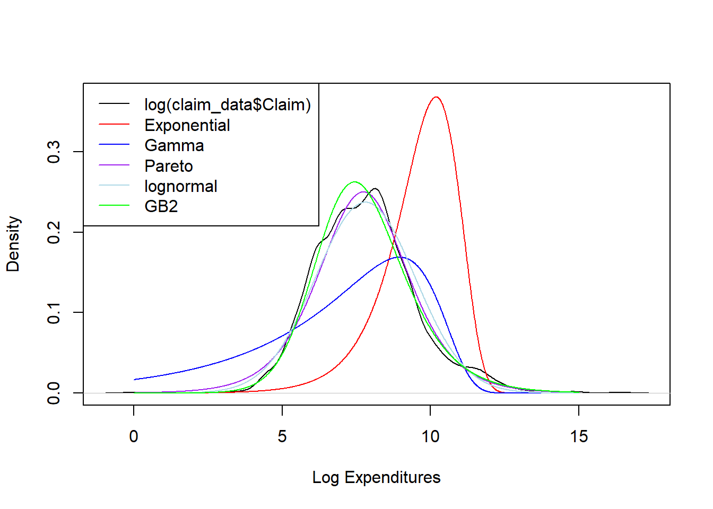
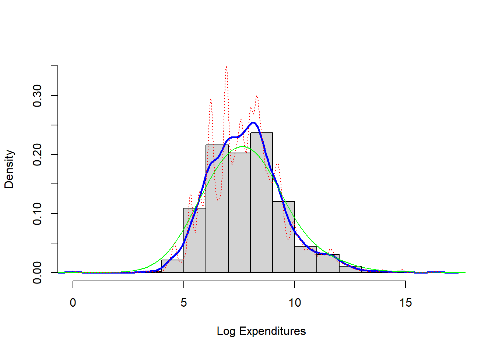
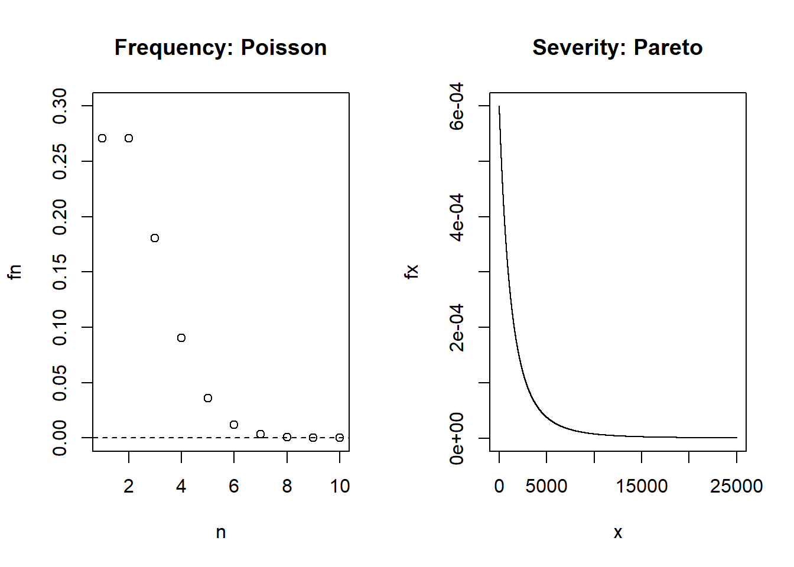

Chapter 5 Model Selection
This file contains illustrative R code for computing important count distributions. When reviewing this code, you should open an R session, copy-and-paste the code, and see it perform. Then, you will be able to change parameters, look up commands, and so forth, as you go.This code uses the dataset CLAIMLEVEL.csv
5.1 Claim Level Data of Property Fund
This section summarizes claims from the property fund for year 2010 and plots the data.
5.1.1 Claims Data
The results below considers individual claims from the property fund for year 2010.
## Read in data and get number of claims.
ClaimLev <- read.csv("Data/CLAIMLEVEL.csv", header=TRUE); nrow(ClaimLev); # 6258[1] 6258#2010 subset
ClaimData<-subset(ClaimLev,Year==2010);
length(unique(ClaimData$PolicyNum)) #403 unique policyholders[1] 403NTot = nrow(ClaimData) #1377 individual claims
NTot[1] 1377# As an alternative, you can simulate Claims
#NTot = 13770
#alphahat = 2
#thetahat = 100
#Claim = rgamma(NTot, shape = alphahat, scale = thetahat)
#Claim = rparetoII(NTot, loc = 0, shape = alphahat, scale = thetahat)
# GB2
#Claim = thetahat*rgamma(NTot, shape = alphahat, scale = 1)/rgamma(NTot, shape = 1, scale =1)
#ClaimData <- data.frame(Claim)
###################################################5.1.2 Summary of Claims
The output below provides summary on claims data for 2010 and summary in logarithmic units.
# Summarizing the claim data for 2010
summary(ClaimData$Claim); sd(ClaimData$Claim) Min. 1st Qu. Median Mean 3rd Qu. Max.
1 789 2250 26623 6171 12922218 [1] 368029.7# Summarizing logarithmic claims for 2010
summary(log(ClaimData$Claim));sd(log(ClaimData$Claim)) Min. 1st Qu. Median Mean 3rd Qu. Max.
0.000 6.670 7.719 7.804 8.728 16.374 [1] 1.6832975.1.3 Plot of Claims
The plots below provides further information about the distribution of sample claims.
#histogram
par(mfrow=c(1, 2))
hist(ClaimData$Claim, main="", xlab="Claims")
hist(log(ClaimData$Claim), main="", xlab="Logarithmic Claims")
#dev.off()5.2 Fitting Distributions
This section shows how to fit basic distributions to a data set.
5.2.1 Inference Assuming a Lognormal Distribution
The results below assume that the data follow a lognormal distribution and usesVGAM library for estimation of parameters.
# Inference assuming a lognormal distribution
# First, take the log of the data and assume normality
y = log(ClaimData$Claim)
summary(y);sd(y) Min. 1st Qu. Median Mean 3rd Qu. Max.
0.000 6.670 7.719 7.804 8.728 16.374 [1] 1.683297# confidence intervals and hypothesis test
t.test(y,mu=log(5000)) # H0: mu_o=log(5000)=8.517
One Sample t-test
data: y
t = -15.717, df = 1376, p-value < 2.2e-16
alternative hypothesis: true mean is not equal to 8.517193
95 percent confidence interval:
7.715235 7.893208
sample estimates:
mean of x
7.804222 #mean of the lognormal distribution
exp(mean(y)+sd(y)^2/2)[1] 10106.82mean(ClaimData$Claim)[1] 26622.59#Alternatively, assume that the data follow a lognormal distribution
#Use "VGAM" library for estimation of parameters
library(VGAM)
fit.LN <- vglm(Claim ~ 1, family=lognormal, data = ClaimData)
summary(fit.LN)
Call:
vglm(formula = Claim ~ 1, family = lognormal, data = ClaimData)
Pearson residuals:
Min 1Q Median 3Q Max
meanlog -4.6380 -0.6740 -0.05083 0.5487 5.093
loge(sdlog) -0.7071 -0.6472 -0.44003 0.1135 17.636
Coefficients:
Estimate Std. Error z value Pr(>|z|)
(Intercept):1 7.80422 0.04535 172.10 <2e-16 ***
(Intercept):2 0.52039 0.01906 27.31 <2e-16 ***
---
Signif. codes: 0 '***' 0.001 '**' 0.01 '*' 0.05 '.' 0.1 ' ' 1
Number of linear predictors: 2
Names of linear predictors: meanlog, loge(sdlog)
Log-likelihood: -13416.87 on 2752 degrees of freedom
Number of iterations: 3
No Hauck-Donner effect found in any of the estimatescoef(fit.LN) # coefficients(Intercept):1 (Intercept):2
7.8042218 0.5203908 confint(fit.LN, level=0.95) # confidence intervals for model parameters 2.5 % 97.5 %
(Intercept):1 7.7153457 7.8930978
(Intercept):2 0.4830429 0.5577387logLik(fit.LN) #loglikelihood for lognormal[1] -13416.87AIC(fit.LN) #AIC for lognormal[1] 26837.74BIC(fit.LN) #BIC for lognormal[1] 26848.2vcov(fit.LN) # covariance matrix for model parameters (Intercept):1 (Intercept):2
(Intercept):1 0.002056237 0.0000000000
(Intercept):2 0.000000000 0.0003631082#mean of the lognormal distribution
exp(mean(y)+sd(y)^2/2)[1] 10106.82exp(coef(fit.LN))(Intercept):1 (Intercept):2
2450.927448 1.682685 A few quick notes on these commands:
- The
t.test()function can be used for a variety of t-tests. In this illustration, it was used to test \(H_0=\mu_0=\log(5000)=8.517\). - The
vglm()function is used to fit vector generalized linear models (VGLMs). Seehelp(vglm)for other modeling options. - The
coef()function returns the estimated coefficients from thevglmor other modeling functions. - The
confintfunction provides the confidence intervals for model parameters. - The
loglikfunction provides the log-likelihood value for the lognormal estimation from thevglmor other modeling functions. AIC()andBIC()returns Akaike’s Information Criterion and BIC or SBC (Schwarz’s Bayesian criterion) for the fitted lognormal model. \(\text{AIC} =-2* \text{(loglikelihood)} + 2*\text{npar}\) , wherenparrepresents the number of parameters in the fitted model, and \(\text{BIC} =-2* \text{log-likelihood} + \log(n)* \text{npar}\) where \(n\) is the number of observations.vcov()returns the covariance matrix for model parameters.
5.2.2 Inference Assuming a Gamma Distribution
The results below assume that the data follow a gamma distribution and usesVGAM library for estimation of parameters.
# Inference assuming a gamma distribution
#install.packages("VGAM")
library(VGAM)
fit.gamma <- vglm(Claim ~ 1, family=gamma2, data = ClaimData)
summary(fit.gamma)
Call:
vglm(formula = Claim ~ 1, family = gamma2, data = ClaimData)
Pearson residuals:
Min 1Q Median 3Q Max
loge(mu) -0.539 -0.5231 -0.4935 -0.4141 261.117
loge(shape) -153.990 -0.1024 0.2335 0.4969 0.772
Coefficients:
Estimate Std. Error z value Pr(>|z|)
(Intercept):1 10.18952 0.04999 203.82 <2e-16 ***
(Intercept):2 -1.23582 0.03001 -41.17 <2e-16 ***
---
Signif. codes: 0 '***' 0.001 '**' 0.01 '*' 0.05 '.' 0.1 ' ' 1
Number of linear predictors: 2
Names of linear predictors: loge(mu), loge(shape)
Log-likelihood: -14150.59 on 2752 degrees of freedom
Number of iterations: 13
No Hauck-Donner effect found in any of the estimatescoef(fit.gamma) # This uses a different parameterization (Intercept):1 (Intercept):2
10.189515 -1.235822 (theta<-exp(coef(fit.gamma)[1])/exp(coef(fit.gamma)[2])) #theta=mu/alpha(Intercept):1
91613.78 (alpha<-exp(coef(fit.gamma)[2]))(Intercept):2
0.2905959 plot(density(log(ClaimData$Claim)), main="", xlab="Log Expenditures")
x <- seq(0,15,by=0.01)
fgamma_ex = dgamma(exp(x), shape = alpha, scale=theta)*exp(x)
lines(x,fgamma_ex,col="blue")
confint(fit.gamma, level=0.95) # confidence intervals for model parameters 2.5 % 97.5 %
(Intercept):1 10.091533 10.287498
(Intercept):2 -1.294648 -1.176995logLik(fit.gamma) #loglikelihood for gamma[1] -14150.59AIC(fit.gamma) #AIC for gamma[1] 28305.17BIC(fit.gamma) #BIC for gamma[1] 28315.63vcov(fit.gamma) # covariance matrix for model parameters (Intercept):1 (Intercept):2
(Intercept):1 0.002499196 0.0000000000
(Intercept):2 0.000000000 0.0009008397# Here is a check on the formulas
#AIC using formula : -2*(loglik)+2(number of parameters)
-2*(logLik(fit.gamma))+2*(length(coef(fit.gamma)))[1] 28305.17#BIC using formula : -2*(loglik)+(number of parameters)*(log(n))
-2*(logLik(fit.gamma))+length(coef(fit.gamma, matrix = TRUE))*log(nrow(ClaimData))[1] 28315.63#Alternatively, we could a gamma distribution using glm
library(MASS)
fit.gamma2 <- glm(Claim~1, data=ClaimData,family=Gamma(link=log))
summary(fit.gamma2, dispersion = gamma.dispersion(fit.gamma2))
Call:
glm(formula = Claim ~ 1, family = Gamma(link = log), data = ClaimData)
Deviance Residuals:
Min 1Q Median 3Q Max
-4.287 -2.258 -1.764 -1.178 30.926
Coefficients:
Estimate Std. Error z value Pr(>|z|)
(Intercept) 10.18952 0.04999 203.8 <2e-16 ***
---
Signif. codes: 0 '***' 0.001 '**' 0.01 '*' 0.05 '.' 0.1 ' ' 1
(Dispersion parameter for Gamma family taken to be 3.441204)
Null deviance: 6569.1 on 1376 degrees of freedom
Residual deviance: 6569.1 on 1376 degrees of freedom
AIC: 28414
Number of Fisher Scoring iterations: 14(theta<-exp(coef(fit.gamma2))*gamma.dispersion(fit.gamma2)) #theta=mu/alpha(Intercept)
91613.78 (alpha<-1/gamma.dispersion(fit.gamma2) )[1] 0.2905959logLik(fit.gamma2) #log - likelihood slightly different from vglm'log Lik.' -14204.77 (df=2)AIC(fit.gamma2) #AIC[1] 28413.53BIC(fit.gamma2) #BIC[1] 28423.99Note : The output from coef(fit.gamma) uses the parameterization \(\mu=\theta * \alpha\). coef(fit.gamma)[1]=\(\log(\mu)\) and coef(fit.gamma)[2]=\(\log(\alpha)\),which implies , \(\alpha\)=exp(coef(fit.gamma)[2]) and \(\theta=\mu/\alpha\)=exp(coef(fit.gamma)[1])/exp(coef(fit.gamma)[2]).
5.2.3 Inference Assuming a Pareto Distribution
The results below assume that the data follow a Pareto distribution and usesVGAM library for estimation of parameters.
fit.pareto <- vglm(Claim ~ 1, paretoII, loc=0, data = ClaimData)
summary(fit.pareto)
Call:
vglm(formula = Claim ~ 1, family = paretoII, data = ClaimData,
loc = 0)
Pearson residuals:
Min 1Q Median 3Q Max
loge(scale) -6.332 -0.8289 0.1875 0.8832 1.174
loge(shape) -10.638 0.0946 0.4047 0.4842 0.513
Coefficients:
Estimate Std. Error z value Pr(>|z|)
(Intercept):1 7.7329210 0.0933332 82.853 <2e-16 ***
(Intercept):2 -0.0008753 0.0538642 -0.016 0.987
---
Signif. codes: 0 '***' 0.001 '**' 0.01 '*' 0.05 '.' 0.1 ' ' 1
Number of linear predictors: 2
Names of linear predictors: loge(scale), loge(shape)
Log-likelihood: -13404.64 on 2752 degrees of freedom
Number of iterations: 5
No Hauck-Donner effect found in any of the estimateshead(fitted(fit.pareto)) [,1]
[1,] 2285.03
[2,] 2285.03
[3,] 2285.03
[4,] 2285.03
[5,] 2285.03
[6,] 2285.03coef(fit.pareto)(Intercept):1 (Intercept):2
7.7329210483 -0.0008752515 exp(coef(fit.pareto))(Intercept):1 (Intercept):2
2282.2590626 0.9991251 confint(fit.pareto, level=0.95) # confidence intervals for model parameters 2.5 % 97.5 %
(Intercept):1 7.5499914 7.9158507
(Intercept):2 -0.1064471 0.1046966logLik(fit.pareto) #loglikelihood for pareto[1] -13404.64AIC(fit.pareto) #AIC for pareto[1] 26813.29BIC(fit.pareto) #BIC for pareto[1] 26823.74vcov(fit.pareto) # covariance matrix for model parameters (Intercept):1 (Intercept):2
(Intercept):1 0.008711083 0.004352904
(Intercept):2 0.004352904 0.0029013505.2.4 Inference Assuming an Exponential Distribution
The results below assume that the data follow an exponential distribution and usesVGAM library for estimation of parameters.
fit.exp <- vglm(Claim ~ 1, exponential, data = ClaimData)
summary(fit.exp)
Call:
vglm(formula = Claim ~ 1, family = exponential, data = ClaimData)
Pearson residuals:
Min 1Q Median 3Q Max
loge(rate) -484.4 0.7682 0.9155 0.9704 1
Coefficients:
Estimate Std. Error z value Pr(>|z|)
(Intercept) -10.18952 0.02695 -378.1 <2e-16 ***
---
Signif. codes: 0 '***' 0.001 '**' 0.01 '*' 0.05 '.' 0.1 ' ' 1
Number of linear predictors: 1
Name of linear predictor: loge(rate)
Residual deviance: 6569.099 on 1376 degrees of freedom
Log-likelihood: -15407.96 on 1376 degrees of freedom
Number of iterations: 6
No Hauck-Donner effect found in any of the estimates(theta = 1/exp(coef(fit.exp)))(Intercept)
26622.59 # Can also fit using the "glm" package
fit.exp2 <- glm(Claim~1, data=ClaimData,family=Gamma(link=log))
summary(fit.exp2,dispersion=1)
Call:
glm(formula = Claim ~ 1, family = Gamma(link = log), data = ClaimData)
Deviance Residuals:
Min 1Q Median 3Q Max
-4.287 -2.258 -1.764 -1.178 30.926
Coefficients:
Estimate Std. Error z value Pr(>|z|)
(Intercept) 10.18952 0.02695 378.1 <2e-16 ***
---
Signif. codes: 0 '***' 0.001 '**' 0.01 '*' 0.05 '.' 0.1 ' ' 1
(Dispersion parameter for Gamma family taken to be 1)
Null deviance: 6569.1 on 1376 degrees of freedom
Residual deviance: 6569.1 on 1376 degrees of freedom
AIC: 28414
Number of Fisher Scoring iterations: 14(theta<-exp(coef(fit.exp2))) (Intercept)
26622.59 5.2.5 Inference Assuming a Generalized Beta Distribution of the Second Kind (GB2) Distribution
The results below assume that the data follow a GB2 distribution and uses the maximum likelihood technique for parameter estimation.
# Inference assuming a GB2 Distribution - this is more complicated
# The likelihood functon of GB2 distribution (negative for optimization)
likgb2 <- function(param) {
a1 <- param[1]
a2 <- param[2]
mu <- param[3]
sigma <- param[4]
yt <- (log(ClaimData$Claim)-mu)/sigma
logexpyt<-ifelse(yt>23,yt,log(1+exp(yt)))
logdens <- a1*yt - log(sigma) - log(beta(a1,a2)) - (a1+a2)*logexpyt -log(ClaimData$Claim)
return(-sum(logdens))
}
# "optim" is a general purpose minimization function
gb2bop <- optim(c(1,1,0,1),likgb2,method=c("L-BFGS-B"),
lower=c(0.01,0.01,-500,0.01),upper=c(500,500,500,500),hessian=TRUE)
#Estimates
gb2bop$par[1] 2.830928 1.202500 6.328981 1.294552#standard error
sqrt(diag(solve(gb2bop$hessian)))[1] 0.9997743 0.2918469 0.3901929 0.2190362#t-statistics
(tstat = gb2bop$par/sqrt(diag(solve(gb2bop$hessian))) )[1] 2.831567 4.120313 16.220133 5.910217# density for GB II
gb2density <- function(x){
a1 <- gb2bop$par[1]
a2 <- gb2bop$par[2]
mu <- gb2bop$par[3]
sigma <- gb2bop$par[4]
xt <- (log(x)-mu)/sigma
logexpxt<-ifelse(xt>23,yt,log(1+exp(xt)))
logdens <- a1*xt - log(sigma) - log(beta(a1,a2)) - (a1+a2)*logexpxt -log(x)
exp(logdens)
}
#AIC using formula : -2*(loglik)+2(number of parameters)
-2*(sum(log(gb2density(ClaimData$Claim))))+2*4[1] 26768.13#BIC using formula : -2*(loglik)+(number of parameters)*(log(n))
-2*(sum(log(gb2density(ClaimData$Claim))))+4*log(nrow(ClaimData))[1] 26789.045.3 Plotting the Fit Using Densities (on a Logarithmic Scale)
This section plots on logarithmic scale, the smooth (nonparametric) density of claims and overlay the densities the distributions considered above.
# None of these distributions is doing a great job....
plot(density(log(ClaimData$Claim)), main="", xlab="Log Expenditures", ylim=c(0,0.37))
x <- seq(0,15,by=0.01)
fexp_ex = dgamma(exp(x), scale = exp(-coef(fit.exp)), shape = 1)*exp(x)
lines(x,fexp_ex, col="red")
fgamma_ex = dgamma(exp(x), shape = alpha, scale=theta)*exp(x)
lines(x,fgamma_ex,col="blue")
fpareto_ex = dparetoII(exp(x),loc=0,shape = exp(coef(fit.pareto)[2]), scale = exp(coef(fit.pareto)[1]))*exp(x)
lines(x,fpareto_ex,col="purple")
flnorm_ex = dlnorm(exp(x), mean = coef(fit.LN)[1], sd = exp(coef(fit.LN)[2]))*exp(x)
lines(x,flnorm_ex, col="lightblue")
# density for GB II
gb2density <- function(x){
a1 <- gb2bop$par[1]
a2 <- gb2bop$par[2]
mu <- gb2bop$par[3]
sigma <- gb2bop$par[4]
xt <- (log(x)-mu)/sigma
logexpxt<-ifelse(xt>23,yt,log(1+exp(xt)))
logdens <- a1*xt - log(sigma) - log(beta(a1,a2)) - (a1+a2)*logexpxt -log(x)
exp(logdens)
}
fGB2_ex = gb2density(exp(x))*exp(x)
lines(x,fGB2_ex, col="green")
legend("topleft", c("log(ClaimData$Claim)","Exponential", "Gamma", "Pareto","lognormal","GB2"), lty=1, col = c("black","red","blue","purple","lightblue","green"))
5.4 Nonparametric Inference
5.4.1 Nonparametric Estimation Tools
This section illustrates non-parametric tools including moment estimators, empirical distribution function, quantiles and density estimators.
5.4.1.1 Moment Estimators
The \(kth\) moment \(EX^k\) is estimated by \(\frac{1}{n}\sum_{i=1}^{n}X_i^k\). When \(k=1\) then the estimator is called the sample mean. The central moment is defined as \(E(X-\mu)^k\). When \(k=2\), then the central moment is called variance. Below illustrates the mean and variance.
# Start with a simple example of ten points
(xExample = c(10,rep(15,3),20,rep(23,4),30)) [1] 10 15 15 15 20 23 23 23 23 30##summary
summary(xExample) # mean Min. 1st Qu. Median Mean 3rd Qu. Max.
10.0 15.0 21.5 19.7 23.0 30.0 sd(xExample)^2 # variance [1] 34.455565.4.1.2 Empirical Distribution Function
The graph below gives the empirical distribution function xExample dataset.
PercentilesxExample <- ecdf(xExample)
###Empirical Distribution Function
plot(PercentilesxExample, main="",xlab="x")
5.4.1.3 Quantiles
The results below gives the quantiles.
##quantiles
quantile(xExample) 0% 25% 50% 75% 100%
10.0 15.0 21.5 23.0 30.0 #quantiles : set you own probabilities
quantile(xExample, probs = seq(0, 1, 0.333333)) 0% 33.3333% 66.6666% 99.9999%
10.00000 15.00000 23.00000 29.99994 #help(quantile)5.4.1.4 Density Estimators
The results below gives the density plots using the uniform kernel and triangular kernel.
##density plot
plot(density(xExample), main="", xlab="x")
plot(density(xExample, bw=.33), main="", xlab="x") # Change the bandwidth
plot(density(xExample, kernel = "triangular"), main="", xlab="x") # Change the kernel
5.4.2 Property Fund Data
This section employs non-parametric estimation tools for model selection for the claims data of the Property Fund.
5.4.2.1 Empirical Distribution Function of Property fund
The results below gives the empirical distribution function of the claims and claims in logarithmic units.
ClaimLev <- read.csv("DATA/CLAIMLEVEL.csv", header=TRUE); nrow(ClaimLev); # 6258[1] 6258ClaimData<-subset(ClaimLev,Year==2010); #2010 subset
##Empirical distribution function of Property fund
par(mfrow=c(1, 2))
Percentiles <- ecdf(ClaimData$Claim)
LogPercentiles <- ecdf(log(ClaimData$Claim))
plot(Percentiles, main="", xlab="Claims")
plot(LogPercentiles, main="", xlab="Logarithmic Claims")5.4.2.2 Density Comparison
Shows a histogram (with shaded gray rectangles) of logarithmic property claims from 2010. The blue thick curve represents a Gaussian kernel density where the bandwidth was selected automatically using an ad hoc rule based on the sample size and volatility of the data.
#Density Comparison
hist(log(ClaimData$Claim), main="", ylim=c(0,.35),xlab="Log Expenditures", freq=FALSE, col="lightgray")
lines(density(log(ClaimData$Claim)), col="blue",lwd=2.5)
lines(density(log(ClaimData$Claim), bw=1), col="green")
lines(density(log(ClaimData$Claim), bw=.1), col="red", lty=3)
density(log(ClaimData$Claim))$bw ##default bandwidth[1] 0.32559085.4.3 Nonparametric Estimation Tools For Model Selection
5.4.3.1 Fit Distributions To The Claims Data
The results below fits gamma and Pareto distribution to the claims data.
library(MASS)
library(VGAM)
# Inference assuming a gamma distribution
fit.gamma2 <- glm(Claim~1, data=ClaimData,family=Gamma(link=log))
summary(fit.gamma2, dispersion = gamma.dispersion(fit.gamma2))
Call:
glm(formula = Claim ~ 1, family = Gamma(link = log), data = ClaimData)
Deviance Residuals:
Min 1Q Median 3Q Max
-4.287 -2.258 -1.764 -1.178 30.926
Coefficients:
Estimate Std. Error z value Pr(>|z|)
(Intercept) 10.18952 0.04999 203.8 <2e-16 ***
---
Signif. codes: 0 '***' 0.001 '**' 0.01 '*' 0.05 '.' 0.1 ' ' 1
(Dispersion parameter for Gamma family taken to be 3.441204)
Null deviance: 6569.1 on 1376 degrees of freedom
Residual deviance: 6569.1 on 1376 degrees of freedom
AIC: 28414
Number of Fisher Scoring iterations: 14(theta<-exp(coef(fit.gamma2))*gamma.dispersion(fit.gamma2)) #mu=theta/alpha(Intercept)
91613.78 (alpha<-1/gamma.dispersion(fit.gamma2) )[1] 0.2905959# Inference assuming a Pareto Distribution
fit.pareto <- vglm(Claim ~ 1, paretoII, loc=0, data = ClaimData)
summary(fit.pareto)
Call:
vglm(formula = Claim ~ 1, family = paretoII, data = ClaimData,
loc = 0)
Pearson residuals:
Min 1Q Median 3Q Max
loge(scale) -6.332 -0.8289 0.1875 0.8832 1.174
loge(shape) -10.638 0.0946 0.4047 0.4842 0.513
Coefficients:
Estimate Std. Error z value Pr(>|z|)
(Intercept):1 7.7329210 0.0933332 82.853 <2e-16 ***
(Intercept):2 -0.0008753 0.0538642 -0.016 0.987
---
Signif. codes: 0 '***' 0.001 '**' 0.01 '*' 0.05 '.' 0.1 ' ' 1
Number of linear predictors: 2
Names of linear predictors: loge(scale), loge(shape)
Log-likelihood: -13404.64 on 2752 degrees of freedom
Number of iterations: 5
No Hauck-Donner effect found in any of the estimateshead(fitted(fit.pareto)) [,1]
[1,] 2285.03
[2,] 2285.03
[3,] 2285.03
[4,] 2285.03
[5,] 2285.03
[6,] 2285.03exp(coef(fit.pareto))(Intercept):1 (Intercept):2
2282.2590626 0.9991251 5.4.3.2 Graphical Comparison of Distributions
The graphs below reinforces the technique of overlaying graphs for comparison purposes using both the distribution function and density function. Pareto distribution provides a better fit.
# Plotting the fit using densities (on a logarithmic scale)
# None of these distributions is doing a great job....
x <- seq(0,15,by=0.01)
par(mfrow=c(1, 2))
LogPercentiles <- ecdf(log(ClaimData$Claim))
plot(LogPercentiles, main="", xlab="Claims", cex=0.4)
Fgamma_ex = pgamma(exp(x), shape = alpha, scale=theta)
lines(x,Fgamma_ex,col="blue")
Fpareto_ex = pparetoII(exp(x),loc=0,shape = exp(coef(fit.pareto)[2]), scale = exp(coef(fit.pareto)[1]))
lines(x,Fpareto_ex,col="purple")
legend("bottomright", c("log(claims)", "Gamma","Pareto"), lty=1, cex=0.6,col = c("black","blue","purple"))
plot(density(log(ClaimData$Claim)) ,main="", xlab="Log Expenditures")
fgamma_ex = dgamma(exp(x), shape = alpha, scale=theta)*exp(x)
lines(x,fgamma_ex,col="blue")
fpareto_ex = dparetoII(exp(x),loc=0,shape = exp(coef(fit.pareto)[2]), scale = exp(coef(fit.pareto)[1]))*exp(x)
lines(x,fpareto_ex,col="purple")
legend("topright", c("log(claims)", "Gamma","Pareto"), lty=1, cex=0.6,col = c("black","blue","purple"))
5.4.3.3 P-P Plots
Shows \(pp\) plots for the Property Fund data; the fitted gamma is on the left and the fitted Pareto is on the right. Pareto distribution provides a better fit again.
# PP Plot
par(mfrow=c(1, 2))
Fgamma_ex = pgamma(ClaimData$Claim, shape = alpha, scale=theta)
plot(Percentiles(ClaimData$Claim),Fgamma_ex, xlab="Empirical DF", ylab="Gamma DF",cex=0.4)
abline(0,1)
Fpareto_ex = pparetoII(ClaimData$Claim,loc=0,shape = exp(coef(fit.pareto)[2]), scale = exp(coef(fit.pareto)[1]))
plot(Percentiles(ClaimData$Claim),Fpareto_ex, xlab="Empirical DF", ylab="Pareto DF",cex=0.4)
abline(0,1)
#dev.off()5.4.3.4 Q-Q Plots
In the graphs below the quantiles are plotted on the original scale in the left-hand panels, on the log scale in the right-hand panel, to allow the analyst to see where a fitted distribution is deficient.
##q-q plot
par(mfrow=c(2, 2))
xseq = seq(0.0001, 0.9999, by=1/length(ClaimData$Claim))
empquant = quantile(ClaimData$Claim, xseq)
Gammaquant = qgamma(xseq, shape = alpha, scale=theta)
plot(empquant, Gammaquant, xlab="Empirical Quantile", ylab="Gamma Quantile")
abline(0,1)
plot(log(empquant), log(Gammaquant), xlab="Log Emp Quantile", ylab="Log Gamma Quantile")
abline(0,1)
Paretoquant = qparetoII(xseq,loc=0,shape = exp(coef(fit.pareto)[2]), scale = exp(coef(fit.pareto)[1]))
plot(empquant, Paretoquant, xlab="Empirical Quantile", ylab="Pareto Quantile")
abline(0,1)
plot(log(empquant), log(Paretoquant), xlab="Log Emp Quantile", ylab="Log Pareto Quantile")
abline(0,1)
5.4.3.5 Goodness of Fit Statistics
For reporting results, it can be effective to supplement graphical displays with selected statistics that summarize model goodness of fit. The results below provides three commonly used goodness of fit statistics.
library(goftest )
#Kolmogorov-Smirnov # the test statistic is "D"
ks.test(ClaimData$Claim, "pgamma", shape = alpha, scale=theta)
One-sample Kolmogorov-Smirnov test
data: ClaimData$Claim
D = 0.26387, p-value < 2.2e-16
alternative hypothesis: two-sidedks.test(ClaimData$Claim, "pparetoII",loc=0,shape = exp(coef(fit.pareto)[2]), scale = exp(coef(fit.pareto)[1]))
One-sample Kolmogorov-Smirnov test
data: ClaimData$Claim
D = 0.047824, p-value = 0.003677
alternative hypothesis: two-sided#Cramer-von Mises # the test statistic is "omega2"
cvm.test(ClaimData$Claim, "pgamma", shape = alpha, scale=theta)
Cramer-von Mises test of goodness-of-fit
Null hypothesis: Gamma distribution
with parameters shape = 0.290595934110839, scale =
91613.779421033
data: ClaimData$Claim
omega2 = 33.378, p-value = 2.549e-05cvm.test(ClaimData$Claim, "pparetoII",loc=0,shape = exp(coef(fit.pareto)[2]), scale = exp(coef(fit.pareto)[1]))
Cramer-von Mises test of goodness-of-fit
Null hypothesis: distribution 'pparetoII'
with parameters shape = 0.999125131378519, scale =
2282.25906257586
data: ClaimData$Claim
omega2 = 0.38437, p-value = 0.07947#Anderson-Darling # the test statistic is "An"
ad.test(ClaimData$Claim, "pgamma", shape = alpha, scale=theta)
Anderson-Darling test of goodness-of-fit
Null hypothesis: Gamma distribution
with parameters shape = 0.290595934110839, scale =
91613.779421033
data: ClaimData$Claim
An = Inf, p-value = 4.357e-07ad.test(ClaimData$Claim, "pparetoII",loc=0,shape = exp(coef(fit.pareto)[2]), scale = exp(coef(fit.pareto)[1]))
Anderson-Darling test of goodness-of-fit
Null hypothesis: distribution 'pparetoII'
with parameters shape = 0.999125131378519, scale =
2282.25906257586
data: ClaimData$Claim
An = 4.1264, p-value = 0.0075675.5 MLE for Grouped Data
5.5.1 MLE for Grouped Data- SOA Exam C # 276
Losses follow the distribution function \(F(x)=1-(\theta/x),\quad x>0\). A sample of 20 losses resulted in the following:
| Interval | Number of Losses |
|---|---|
| (0,10] | 9 |
| (10,25] | 6 |
| (25,infinity) | 5 |
Calculate the maximum likelihood estimate of \(\theta\).
##Log Likelihood function
likgrp <- function(theta) {
loglike <-log(((1-(theta/10))^9)*(((theta/10)-(theta/25))^6)* (((theta/25))^5))
return(-sum(loglike))
}
# "optim" is a general purpose minimization function
grplik <- optim(c(1),likgrp,method=c("L-BFGS-B"),hessian=TRUE)
#Estimates - Answer "B" on SoA Problem
grplik$par[1] 5.5#standard error
sqrt(diag(solve(grplik$hessian)))[1] 1.11243#t-statistics
(tstat = grplik$par/sqrt(diag(solve(grplik$hessian))) )[1] 4.944132#Plot of Negative Log-Likelihood function
vllh = Vectorize(likgrp,"theta")
theta=seq(0,10, by=0.01)
plot(theta, vllh(theta), pch=16, main ="Negative Log-Likelihood Function" , cex=.25,
xlab=expression(theta), ylab=expression(paste("L(",theta,")")))